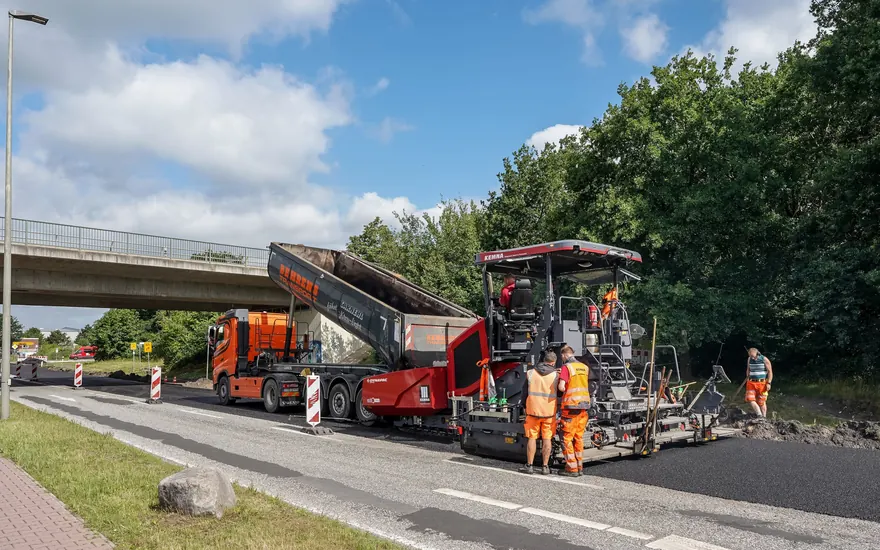
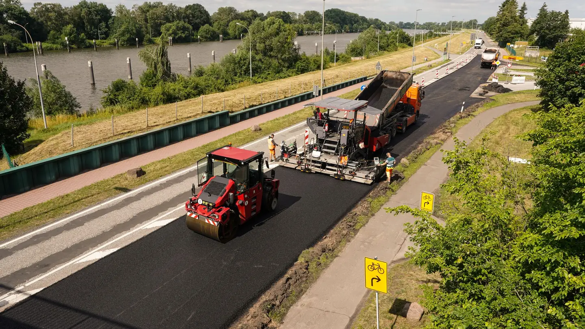
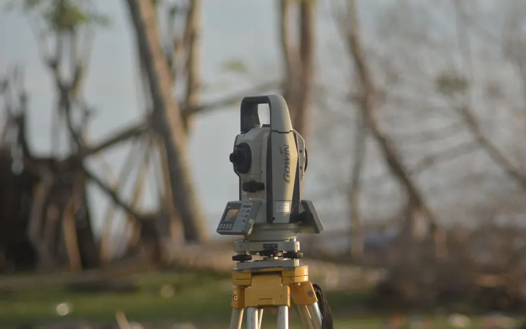
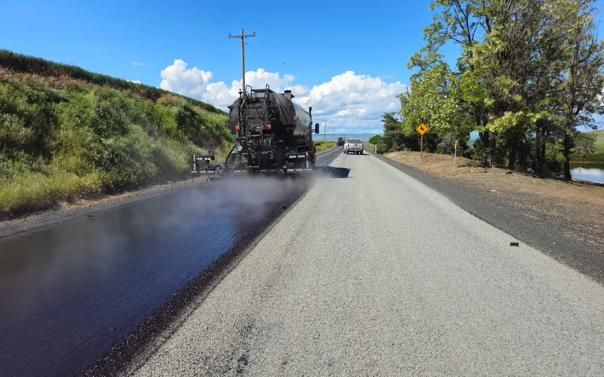
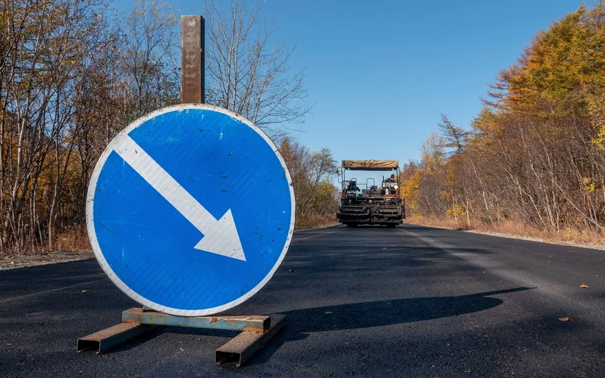
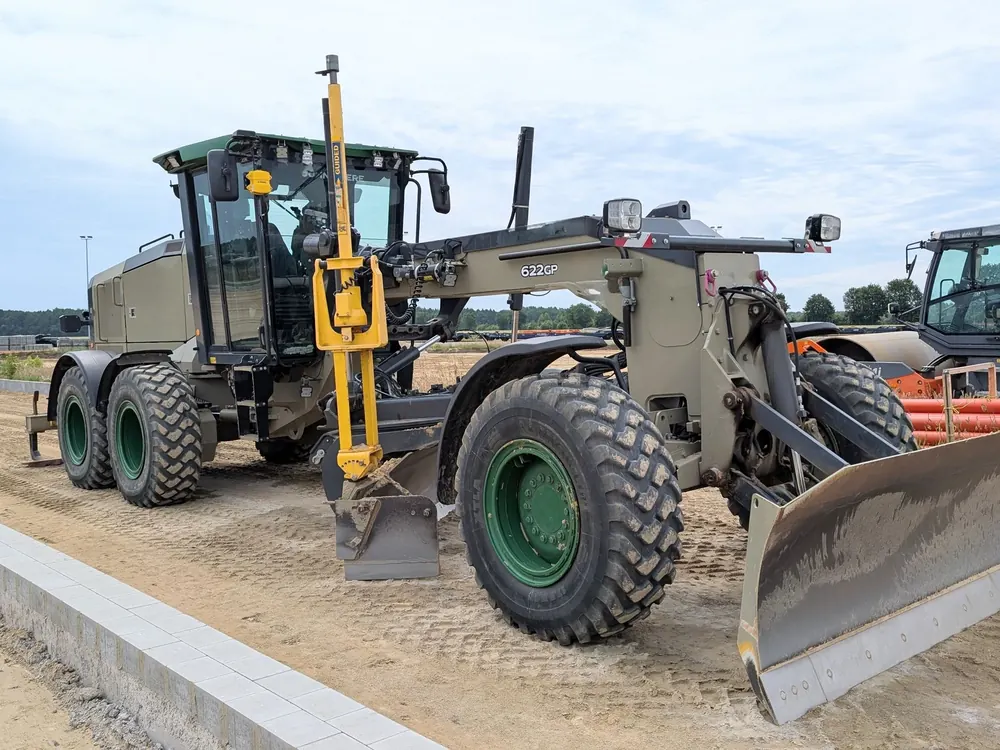
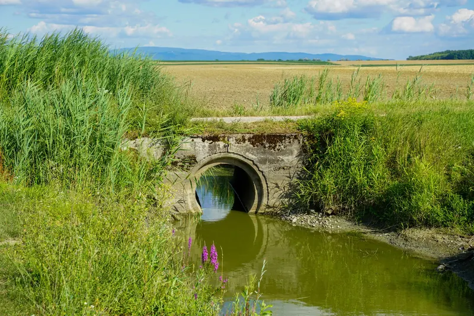
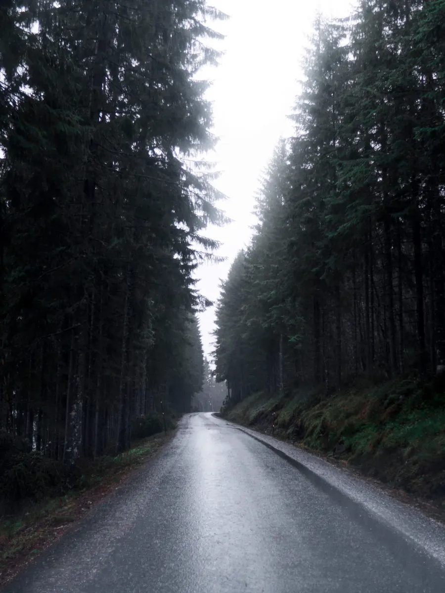
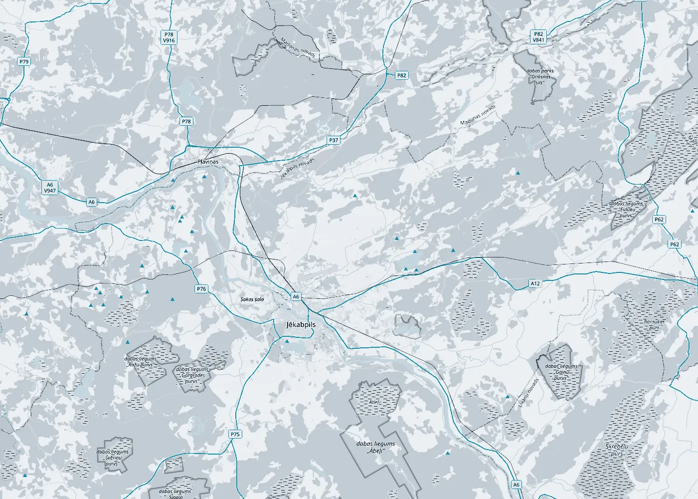

01Būvdarbu vadītājs objektā
Ceļu būvdarbu vadīšana
Organizējam darbus objektā: secību, tehniku, materiālu piegādes un termiņus. Kārtojam būvdarbu žurnālu un segto darbu aktus, lai katrs posms būtu pieņemts pirms nākamā.

0+000Ceļu būvdarbu vadīšana · Būvuzraudzība
SIA „Project MSR” vada ceļu būvdarbus un veic būvuzraudzību pasūtītāja pusē: no zemes klātnes līdz asfaltam un objekta nodošanai.
Asfaltbetona kārtas ieklāšana
0+100Pakalpojumi
Būvkomersantu reģistrā mūsu darbības joma ir ceļu būvdarbu vadīšana un būvuzraudzība. Strādājam arī ceļu būvniecībā un uzturēšanā.
Pastāstīt par objektu
01Būvdarbu vadītājs objektā
Organizējam darbus objektā: secību, tehniku, materiālu piegādes un termiņus. Kārtojam būvdarbu žurnālu un segto darbu aktus, lai katrs posms būtu pieņemts pirms nākamā.

02Pasūtītāja pusē
Pārstāvam pasūtītāju: pārbaudām, vai ceļu būvē pēc projekta, līguma un normatīviem. Pieņemam segtos darbus, fiksējam defektus un sekojam, lai tos novērš.

03Būvniecība un remonts
Ceļu un laukumu būvniecība, seguma atjaunošana un uzturēšanas darbi. Darbu apjomu un secību saskaņojam ar pasūtītāju pirms sākšanas.

04Izpilddokumentācija
Izpilddokumentācija, izpilduzmērījumi un defektu saraksts. Palīdzam sagatavot objektu nodošanai ekspluatācijā, lai pēc darbiem viss būtu kārtībā arī papīros.
0+200Ceļa kārtas
Ceļa kvalitāte slēpjas kārtās, kuras pēc asfaltēšanas vairs neredz. Tāpēc katru kārtu pieņemam, pirms to pārklāj nākamā.
01
Maisījuma temperatūra ieklāšanas brīdī, kārtas biezums, līdzenums, šuves un slīpumi.
02
Šķembu frakcija un kvalitāte, kārtas biezums, blīvējums un augstuma atzīmes.
03
Smilts kvalitāte, kārtas biezums un blīvējums, lai ziemā ceļš necilātos.
04
Grunts nomaiņa un blīvums, profils, nogāzes un pamatnes līmenis.


Grāvji, caurtekas un slīpumi. Ja ūdens no ceļa neaiziet, cieš visas kārtas, tāpēc to pārbaudām kopā ar zemes klātni.

0+300Kam noderam
Ceļu darbu vadīšana un uzraudzība noder katram pasūtītājam, kurš grib saņemt ceļu tieši tādu, kāds tas ir projektā.
Pašvaldību ceļi un ielas: būvdarbu vadīšana vai būvuzraudzība pasūtītāja pusē.
Piebrauktuves, laukumi un iekšējie ceļi ražotņu un noliktavu teritorijās.
Meža un lauku ceļi, grāvji un caurtekas, lai pa ceļu var braukt arī pēc lietus.
Būvdarbu vadītājs vai būvuzraugs ceļa objektam, ja jūsu komandā tāda nav.
0+400Kā strādājam
Pastāstiet, kur atrodas objekts, kas tiek būvēts un kurā posmā ir darbi. Ja ir projekts, pievienojiet to.
Izskatām projektu un apskatām objektu, lai saprastu darba apjomu.
Vienojamies par pakalpojumu, objekta apmeklējumu biežumu, termiņiem un cenu. Visu nostiprinām līgumā.
Vadām vai uzraugām darbus līdz pieņemšanai un nododam izpilddokumentāciju.

0+450Kur strādājam
Uzņēmums atrodas Variešu pagastā, Jēkabpils novadā. Ja objekts ir citā novadā, uzrakstiet vai piezvaniet, un vienosimies.
0+500Kontakti
Uzrakstiet, kas tiek būvēts, kur un kurā posmā ir darbi. Atbildēsim ar priekšlikumu.